전기기사 (2017-08-26 기출문제)
1과목: 전기자기학
1. 점전하에 의한 전위 함수가
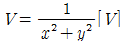
일 때 gradV는?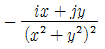
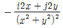
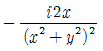
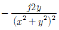
(정답률: 77%)

2. 면적 S[m2], 간격 d[m]인 평행판 콘덴서에 전하 Q[C]를 충전 하였을 때 정전 에너지 w[J]는?
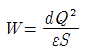
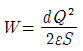
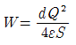
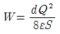
(정답률: 72%)
3. Poisson 및 Laplace 방정식을 유도하는데 관련이 없는 식은?
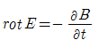
- E=-gradV
- divD=ρv
- D=ɛE
(정답률: 58%)
4. 반지름 1cm인 원형코일에 전류 10A가 흐를 때, 코일의 중심에서 코일면에 수직으로 √3cm 떨어진 점의 자계의 세기는 몇 AT/m 인가?
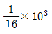
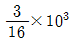
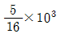
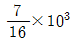
(정답률: 46%)
5. 평등자계 내에 전자가 수직으로 입사하였을 때 전자의 운동을 바르게 나타낸 것은?
- 구심력은 전자속도에 반비례 한다.
- 원심력은 자계의 세기에 반비례 한다.
- 원운동을 하고 반지름은 자계의 세기에 비례한다.
- 원운동을 하고 반지름은 전자의 회전속도에 비례한다.
(정답률: 62%)
6. 액체 유전체를 포함한 콘덴서 용량이 C[F]인 것에 V[V]의 전압을 가했을 경우에 흐르는 누설전류[A]는? (단, 유전체의 유전율은 ɛ[F/m], 고유저항은 ρ[Ω • m]이다.)
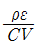
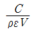
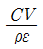
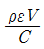
(정답률: 79%)
7. 다이아몬드와 같은 단결정 물체에 전장을 가할 때 유도되는 분극은?
- 전자 분극
- 이온 분극과 배향 분극
- 전자 분극과 이온 분극
- 전자 분극, 이온 분극, 배향 분극
(정답률: 63%)
8. 다음 설명 중 옳은 것은?
- 무한 직선 도선에 흐르는 전류에 의한 도선 내부에서 자계의 크기는 도선의 반경에 비례한다.
- 무한 직선 도선에 흐르는 전류에 의한 도선 외부에서 자계의 크기는 도선의 중심과의 거리에 무관하다.
- 무한장 솔레노이드 내부 자계의 크기는 코일에 흐르는 전류의 크기에 비례한다.
- 무한장 솔레노이드 내부 자계의 크기는 단위 길이당 권수의 제곱에 비례한다.
(정답률: 65%)
9. 그림과 같은 유전속 분포가 이루어질 때 ɛ1과 ɛ2의 크기 관계는?
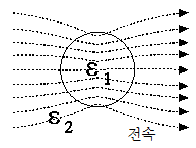
- ɛ1>ɛ2
- ɛ1<ɛ2
- ɛ1=ɛ2
- ɛ1>0, ɛ2>0
(정답률: 82%)
10. 인덕턴스의 단위[H]와 같지 않은 것은?
- J/A • s
- Ω • s
- Wb/A
- J/A2
(정답률: 56%)
11. 전계 및 자계의 세기가 각각 E.H일 때, 포인팅 벡터 P의 표시로 옳은 것은?
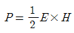
- P=ErotH
- P=E×H
- P=HrotE
(정답률: 83%)
12. 규소 강판과 같은 자심재료의 히스테리시스 곡선의 특징은?
- 보자력이 큰 것이 좋다.
- 보자력과 잔류자기가 모두 큰 것이 좋다.
- 히스테리시스 곡선의 면적이 큰 것이 좋다.
- 히스테리시스 곡선의 면적이 작은 것이 좋다.
(정답률: 69%)
13. 커패시터를 제조하는데 A, B, C, D와 같은 4가지의 유전재료가 있다. 커패시터 내의 전계를 일정하게 하였을 때, 단위 체적당 가장 큰 에너지 밀도를 나타내는 재료부터 순서대로 나열한 것은? (단, 유전재료 A, B, C, D의 비유전율은 각각
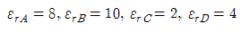
이다.)- C>D>A>B
- B>A>D>C
- D>A>C>B
- A>B>D>C
(정답률: 84%)
14. 투자율 μ[H/m], 자계의 세기 H[AT/m], 자속밀도 B[Wb/m2]인 곳의 자계 에너지 밀도 [J/m3]는?
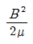
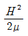
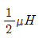
- BH
(정답률: 75%)
15. 정전계 해석에 관한 설명으로 틀린 것은?
- 포아송 방정식은 가우스 정리의 미분형으로 구할 수 있다.
- 도체 표면에서의 전계의 세기는 표면에 대해 법선 방향을 갖는다.
- 라플라스 방정식은 전극이나 도체의 형태에 관계없이 체적전하 밀도가 0인 모든 점에서 ▽2V=0만족한다.
- 라플라스 방정식은 비선형 방정식이다.
(정답률: 76%)
16. 자화의 세기 단위로 옳은 것은?
- AT/Wb
- AT/m2
- Wb • m
- Wb/m2
(정답률: 55%)
17. 중심은 원점에 있고 반지름 a[m]인 원형 선도체가 z=0인 평면에 있다. 도체에 선전하밀도 ρL[C/m]가 분포되어 있을 때 z=b[m]인 점에서 전계 E[V/m]는? (단, ar, az는 원통 좌표계에서 r 및 z 방향의 단위벡터이다.)
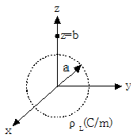
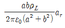
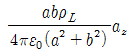
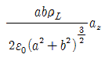
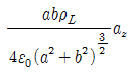
(정답률: 68%)
18. V=x2[V]로 주어지는 전위 분포일 때 x=20cm인 점의 전계는?
- +x 방향으로 40v/m
- -x 방향으로 40V/m
- +x 방향으로 0.4V/m
- -x 방향으로 0.4V/m
(정답률: 66%)
19. 공간 도체내의 한 점에 있어서 자속이 시간적으로 변화하는 경우에 성립하는 식은?
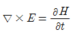
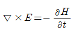
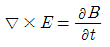
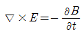
(정답률: 71%)
20. 변위 전류와 가장 관계가 깊은 것은?
- 반도체
- 유전체
- 자성체
- 도체
(정답률: 83%)
2과목: 전력공학
21. 전력용 콘덴서에 의하여 얻을 수 있는 전류는?
- 지상 전류
- 진상 전류
- 동상 전류
- 영상 전류
(정답률: 78%)
22. 부하 역률이 현저히 낮은 경우 발생하는 현상이 아닌 것은?
- 전기 요금의 증가
- 유효 전력의 증가
- 전력 손실의 증가
- 선로의 전압강하 증가
(정답률: 74%)
23. 배전용 변전소의 주변압기로 주로 사용되는 것은?
- 강압 변압기
- 체승 변압기
- 단권 변압기
- 3권선 변압기
(정답률: 64%)
24. 초호각(Arcing horn)의 역할은?
- 풍압을 조절한다.
- 송전 효율을 높인다.
- 애자의 파손을 방지한다.
- 고조파수의 섬락전압을 높인다.
(정답률: 80%)
25. △-△ 결선된 3상 변압기를 사용한 비접지 방식의 선로가 있다. 이때 1선지락 고장이 발생하면 다른 건전한 2선의 대지전압은 지락 전의 몇 배까지 상승하는가?
- √3/2
- √3
- √2
- 1
(정답률: 76%)
26. 22kV, 60Hz 1회선의 3상 송전선에서 무부하 충전전류는 약 몇 A인가? (단, 송전선의 길이는 20km이고, 1선 1km당 정전용량은 0.5㎌이다.)
- 12
- 24
- 36
- 48
(정답률: 64%)
27. 개폐서지의 이상전압을 감쇄할 목적으로 설치하는 것은?
- 단로기
- 차단기
- 리액터
- 개폐 저항기
(정답률: 77%)
28. 모선 보호용 계전기로 사용하면 가장 유리한 것은?
- 거리 방향 계전기
- 역상 계전기
- 재폐로 계전기
- 과전류 계전기
(정답률: 65%)
29. 현수애자에 대한 설명으로 틀린 것은?
- 애자를 연결하는 방법에 따라 클래비스형과 볼소켓형이 있다.
- 큰 하중에 대하여는 2연 또는 3연으로 하여 사용할 수 있다.
- 애자의 연결 개수를 가감함으로서 임의의 송전전압에 사용할 수 있다.
- 2~4층의 갓 모양의 자기편을 시멘트로 접착하고 그 자기를 주철제 베이스로 지지한다.
(정답률: 64%)
30. 송전선로의 고장전류 계산에 영상 임피던스가 필요한 경우는?
- 1선 지락
- 3상 단락
- 3선 단선
- 선간 단락
(정답률: 80%)
31. 그림과 같은 3상 송전 계통에서 송전단 전압은 3300V이다. 점 P에서 3상 단락 사고가 발생했다면 발전기에 흐르는 단락전류는 약 몇 A인가?
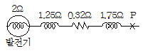
- 320
- 330
- 380
- 410
(정답률: 63%)
32. 조속기의 폐쇄시간이 짧을수록 옳은 것은?
- 수격작용은 작아진다.
- 발전기의 전압 상승률은 커진다.
- 수차의 속도 변동률은 작아진다.
- 수압관 내의 수압 상승률은 작아진다.
(정답률: 65%)
33. 그림과 같은 수전단 전압 3.3kV, 역률 0.85(뒤짐)인 부하 300kW에 공급하는 선로가 있다. 이때 송전단 전압은 약 몇 V인가?
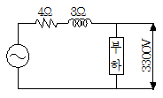
- 3430
- 3530
- 3730
- 3830
(정답률: 41%)
34. 증기의 엔탈피란?
- 증기 1kg의 잠열
- 증기 1kg의 현열
- 증기 1kg의 보유열량
- 증기 1kg의 증발열을 그 온도로 나눈 것
(정답률: 69%)
35. 장거리 송전선로는 일반적으로 어떤 회로로 취급하여 회로를 해석하는가?
- 분포정수 회로
- 분산부하 회로
- 집중정수 회로
- 특성 임피던스 회로
(정답률: 74%)
36. 4단자 정수 A=D=0.8, B=j1.0인 3상 송전선로에 송전단 전압 160kV를 인가할 때 무부하시 수전단 전압은 몇 kV인가?
- 154
- 164
- 180
- 200
(정답률: 58%)
37. 유도장해를 방지하기 위한 전력선측의 대책으로 틀린 것은?
- 차폐선을 설치한다.
- 고속도 차단기를 사용한다.
- 중성점 전압을 가능한 높게 한다.
- 중성점 접지에 고저항을 넣어서 지락전류를 줄인다.
(정답률: 67%)
38. 원자로의 감속재에 대한 설명으로 틀린 것은?
- 감속 능력이 클 것
- 원자 질량이 클 것
- 사용 재료로 경수를 사용
- 고속 중성자를 열 중성자로 바꾸는 작용
(정답률: 69%)
39. 송전선로에 매설지선을 설치하는 주된 목적은?
- 철탑 기초의 강도를 보강하기 위하여
- 직격뢰로부터 송전선을 차폐보호하기 위하여
- 현수애자 1연의 전압분담을 균일화하기 위하여
- 철탑으로부터 송전선로의 역섬락을 방지하기 위하여
(정답률: 77%)
40. 송전전력, 부하역률, 송전거리, 전력손실, 선간전압이 동일할 때 3상 3선식에 의한 소요 전선량은 단상 2선식의 몇 %인가?
- 50
- 67
- 75
- 87
(정답률: 61%)
3과목: 전기기기
41. 3상 유도기에서 출력의 변환 식으로 옳은 것은?
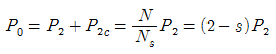
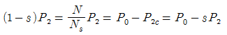
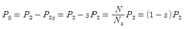
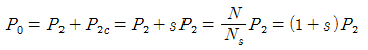
(정답률: 73%)
42. 변압기의 보호방식 중 비율차동 계전기를 사용하는 경우는?
- 고조파 발생을 억제하기 위하여
- 과여자 전류를 억제하기 위하여
- 과전압 발생을 억제하기 위하여
- 변압기 상간 단락 보호를 위하여
(정답률: 57%)
43. 다이오드 2개를 이용하여 전파 정류를 하고, 순저항 부하에 전력을 공급하는 회로가 있다. 저항에 걸리는 직류분 전압이 90V라면 다이오드에 걸리는 최대 역전압[V]의 크기는?
- 90
- 242.8
- 254.5
- 282.8
(정답률: 57%)
44. 동기 전동기에 대한 설명으로 옳은 것은?
- 기동 토크가 크다.
- 역률 조정을 할 수 있다.
- 가변속 전동기로서 다양하게 응용된다.
- 공극이 매우 작아 설치 및 보수가 어렵다.
(정답률: 63%)
45. 농형 유도전동기에 주로 사용되는 속도 제어법은?
- 극수 제어법
- 종속 제어법
- 2차 여자 제어법
- 2차 저항 제어법
(정답률: 74%)
46. 3상 권선형 유도 전동기에서 2차측 저항을 2배로 하면 그 최대토크는 어떻게 되는가?
- 불변이다.
- 2배 증가한다.
- 1/2로 감소한다.
- √2배 증가한다.
(정답률: 72%)
47. 직류 전동기의 전기자 전류가 10A일 때 5kg • m의 토크가 발생하였다. 이 전동기의 계자속이 80%로 감소되고, 전기자 전류가 12A로 되면 토크는 약 몇 kg • m 인가?
- 5.2
- 4.8
- 4.3
- 3.9
(정답률: 69%)
48. 일반적인 변압기의 무부하손 중 효율에 가장 큰 영향을 미치는 것은?
- 와전류 손
- 유전체 손
- 히스테리시스 손
- 여자전류 저항 손
(정답률: 63%)
49. 전기자 총 도체수 152, 4극, 파권인 직류 발전기가 전기자 전류를 100A로 할 때 매극당 감자 기자력 [AT/극]은 얼마인가? (단, 브러시의 이동각은 10°이다.)
- 33.6
- 52.8
- 1⑤.6
- 211.2
(정답률: 42%)
50. 정격전압, 정격 주파수가 6600/220V, 60Hz, 와류손이 720W인 단상 변압기가 있다. 이 변압기를 3300V, 50Hz의 전원에 사용하는 경우 와류손은 약 몇 W인가?
- 120
- 150
- 180
- 200
(정답률: 50%)
51. 보극이 없는 직류 발전기에서 부하의 증가에 따라 브러시의 위치를 어떻게 하여야 하는가?
- 그대로 둔다.
- 계자극의 중간에 놓는다.
- 발전기의 회전방향으로 이동시킨다.
- 발전기의 회전방향과 반대로 이동시킨다.
(정답률: 62%)
52. 반발 기동형 단상유도전동기의 회전 방향을 변경하려면?
- 전원의 2선을 바꾼다.
- 주권선의 2선을 바꾼다.
- 브러시의 접속선을 바꾼다.
- 브러시의 위치를 조정한다.
(정답률: 55%)
53. 직류 전동기의 속도제어 방법이 아닌 것은?
- 계자 제어법
- 전압 제어법
- 주파수 제어법
- 직렬 저항 제어법
(정답률: 58%)
54. 동기 발전기의 단락비가 1.2이면 이 발전기의 %동기임피던스 [p • u]는?
- 0.12
- 0.25
- 0.52
- 0.83
(정답률: 71%)
55. 다음 ( ) 안에 옳은 내용을 순서대로 나열한 것은?
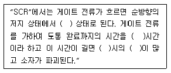
- 온(On), 턴온(Turn on), 스위칭, 전력손실
- 온(On), 턴온(Turn on), 전력손실, 스위칭
- 스위칭, 온(On), 턴온(Turn on), 전력손실
- 턴온(Turn on), 스위칭, 온(On), 전력손실
(정답률: 76%)
56. 동기 발전기의 안정도를 증진시키기 위한 대책이 아닌 것은?
- 속응 여자 방식을 사용한다.
- 정상 임피던스를 작게 한다.
- 역상·영상 임피던스를 작게 한다.
- 회전자의 플라이 휠 효과를 크게 한다.
(정답률: 53%)
57. 비 돌극형 동기 발전기 한 상의 단자전압을 V, 유기 기전력을 E, 동기 리액턴스를 Xs, 부하각이 δ이고, 전기자 저항을 무시할 때 한상의 최대출력[W]은?
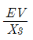
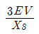
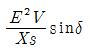
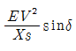
(정답률: 61%)
58. 60Hz의 3상 유도전동기를 동일 전압으로 50Hz에 사용할 때 ⓐ무부하 전류, ⓑ온도 상승, ⓒ 속도는 어떻게 변하겠는가?
- ⓐ60/50으로 증가, ⓑ60/50으로 증가, ⓒ50/60으로 감소
- ⓐ60/50으로 증가, ⓑ50/60으로 감소, ⓒ50/60으로 감소
- ⓐ50/60으로 감소, ⓑ60/50으로 증가, ⓒ50/60으로 감소
- ⓐ50/60으로 감소, ⓑ60/50으로 증가, ⓒ60/50으로 증가
(정답률: 56%)
59. 3000/200V 변압기의 1차 임피던스가 225Ω이면, 2차 환산 임피던스는 약 몇 Ω인가?
- 1.0
- 1.5
- 2.1
- 2.8
(정답률: 57%)
60. 60Hz, 1328/230V의 단상 변압기가 있다. 무부하 전류 i=3sinwt+1.1sin(3wt+α3)[A]이다. 지금 위와 똑같은 변압기 3대로 Y-△결선하여 1차에 2300V의 평형 전압을 걸고 2차를 무부하로 하면 △회로를 순환하는 전류(실효치)는 약 몇 A인가?
- 0.77
- 1.10
- 4.48
- 6.35
(정답률: 38%)
4과목: 회로이론 및 제어공학
61. 다음 블록선도의 전달함수는?
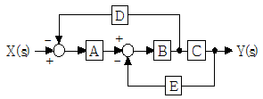
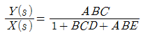
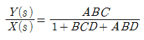
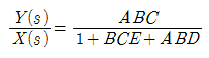
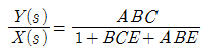
(정답률: 78%)
62. 주파수 특성의 정수 중 대역폭이 좁으면 좁을수록 이때의 응답속도는 어떻게 되는가?
- 빨라진다.
- 늦어진다.
- 빨라졌다 늦어진다.
- 늦어졌다 빨라진다.
(정답률: 50%)
63. 다음 논리회로가 나타내는 식은?
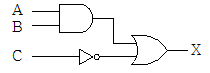
(정답률: 69%)
64. 그림과 같은 요소는 제어계의 어떤 요소인가?
- 적분요소
- 미분요소
- 1차 지연요소
- 1차 지연 미분요소
(정답률: 53%)
65. 상태방정식으로 표시되는 제어계의 천이행렬
(정답률: 65%)
66. 제어장치가 제어대상에 가하는 제어신호로 제어장치의 출력인 동시에 제어대상의 입력인 신호는?
- 목표값
- 조작량
- 제어량
- 동작신호
(정답률: 49%)
67. 제어기에서 적분제어의 영향으로 가장 적합한 것은?
- 대역폭이 증가한다.
- 응답 속응성을 개선시킨다.
- 작동오차의 변화율에 반응하여 동작한다.
- 정상상태의 오차를 줄이는 효과를 갖는다.
(정답률: 60%)
68. 의 크기와 위상각은?
(정답률: 49%)
69. Routh 안정 판별표에서 수열의 제1열이 다음과 같을 때 이 계통의 특성 방정식에 양의 실수부를 갖는 근이 몇 개인가?
- 전혀 없다.
- 1개 있다.
- 2개 있다.
- 3개 있다.
(정답률: 74%)
70. 특성 방정식 을 루스 판별법으로 분석한 결과로 옳은 것은?
- s 평면의 우반면에 근이 존재하지 않기 때문에 안정한 시스템이다.
- s 평면의 우반면에 근이 1개 존재하기 때문에 불안정한 시스템이다.
- s 평면의 우반면에 근이 2개 존재하기 때문에 불안정한 시스템이다.
- s 평면의 우반면에 근이 3개 존재하기 때문에 불안정한 시스템이다.
(정답률: 70%)
71. 회로에서의 전류 방향을 옳게 나타낸 것은?
- 알 수 없다.
- 시계 방향이다.
- 흐르지 않는다.
- 반시계 방향이다.
(정답률: 71%)
72. 입력신호 x(t)와 출력신호 y(t)의 관계가 다음과 같을 때 전달함수는?
(정답률: 70%)
73. 회로에서 10mH의 인덕턴스에 흐르는 전류는 일반적으로 i(t)=A+Be-at로 표시된다. a의 값은?
- 100
- 200
- 400
- 500
(정답률: 47%)
74. R-L 직렬회로에 e=100sin(120πt)[V]의 전압을 인가하여 i=2sin(120πt-45°)[A]의 전류가 흐르도록 하려면 저항은 몇 Ω인가?
- 25.0
- 35.4
- 50.0
- 70.7
(정답률: 47%)
75. 3상 △부하에서 각 선전류를 Ia, Ib, Ic라 하면 전류의 영상분[A]은? (단, 회로는 평형 상태이다.)
- ∞
- 1
- 1/3
- 0
(정답률: 70%)
76. 정현파 교류전원 e=Emsin(wt+θ)[V]가 인가된 RLC 직렬 회로에 있어서일 경우, 이 회로에 흐르는 전류 I[A]의 위상은 인가전압 e[V]의 위상보다 어떻게 되는가?
- 앞선다.
- 뒤진다.
- 앞선다.
- 뒤진다.
(정답률: 55%)
77. 그림과 같은 R-C 병렬회로에서 전원전압이 e(t)=3e-5t인 경우 이 회로의 임피던스는?
(정답률: 48%)
78. 분포정수 선로에서 위상정수를 β[rad/m]라 할 때, 파장은?
- 2πβ
- 2π/β
- 4πβ
- 4π/β
(정답률: 67%)
79. 성형(Y)결선의 부하가 있다. 선간전압 300V의 3상 교류를 가했을 때 선전류가 40A이고, 역률이 0.8이라면 리액턴스는 약 몇 Ω인가?
- 1.66
- 2.60
- 3.56
- 4.33
(정답률: 39%)
80. 그림의 회로에서 합성 인덕턴스는?
(정답률: 51%)
5과목: 전기설비기술기준 및 판단기준
81. 가공전선로에 사용하는 지지물의 강도 계산 시 구성재의 수직 투영면적 1m2에 대한 풍압을 기초로 적용하는 갑종풍압하중 값의 기준으로 틀린 것은?
- 목주 : 588 Pa
- 원형 철주 : 588Pa
- 철근 콘크리트주 : 1117Pa
- 강관으로 구성된 철탑(단주는 제외) : 1255Pa
(정답률: 63%)
82. 최대 사용전압 7kV 이하 전로의 절연내력을 시험할 때 시험 전압을 연속하여 몇 분간 가하였을 때 이에 견디어야 하는가?
- 5분
- 10분
- 15분
- 30분
(정답률: 72%)
83. 고압 인입선 시설에 대한 설명으로 틀린 것은?
- 15m 떨어진 다른 수용가에 고압 연접인입선을 시설하였다.
- 전선은 5mm 경동선과 동등한 세기의 고압 절연전선을 사용하였다.
- 고압 가공인입선 아래에 위험표시를 하고 지표상 3.5m의 높이에 설치하였다.
- 횡단 보도교 위에 시설하는 경우 케이블을 사용하여 노면상에서 3.5m의 높이에 시설하였다.
(정답률: 43%)
84. 공통접지공사 적용시 상도체의 단면적이 16mm2인 경우 보호도체(PE)에 적합한 단면적은? (단, 보호도체의 재질이 상도체와 같은 경우)
- 4
- 6
- 10
- 16
(정답률: 50%)
85. 절연유의 구외 유출방지 설비를 하여야 하는 변압기의 사용전압은 몇 kV 이상인가?(오류 신고가 접수된 문제입니다. 반드시 정답과 해설을 확인하시기 바랍니다.)
- 10
- 50
- 100
- 150
(정답률: 46%)
86. 일반 변전소 또는 이에 준하는 곳의 주요 변압기에 반드시 시설하여야 하는 계측장치가 아닌 것은?
- 주파수
- 전압
- 전류
- 전력
(정답률: 68%)
87. 345kV 가공전선이 154kV 가공전선과 교차하는 경우 이들 양 전선 상호간의 이격거리는 몇 m 이상이어야 하는가?
- 4.48
- 4.96
- 5.48
- 5.82
(정답률: 53%)
88. 애자사용공사에 의한 저압 옥내배선을 시설할 때 전선의 지지점간의 거리는 전선을 조영재의 윗면 또는 옆면에 따라 붙일 경우 몇 m 이하인가?
- 1.5
- 2
- 2.5
- 3
(정답률: 54%)
89. 가공 접지선을 사용하여 제 2종 접지공사를 하는 경우 변압기의 시설 장소로부터 몇 m까지 떼어 놓을 수 있는가?
- 50
- 100
- 150
- 200
(정답률: 30%)
90. 고압 가공전선으로 경동선을 사용하는 경우 안전율은 얼마 이상이 되는 이도(弛度)로 시설하여야 하는가?
- 2.0
- 2.2
- 2.5
- 4.0
(정답률: 56%)
91. 백열전등 또는 방전등에 전기를 공급하는 옥내전로의 대지전압은 몇 V 이하인가?
- 120
- 150
- 200
- 300
(정답률: 71%)
92. 특수 장소에 시설하는 전선로의 기준으로 틀린 것은?
- 교량의 윗면에 시설하는 저압전선로는 교량 노면상 5m 이상으로 할 것
- 교량에 시설하는 고압전선로에서 전선과 조영재 사이의 이격거리는 20cm 이상일 것
- 저압전선로와 고압전선로를 같은 벼랑에 시설하는 경우 고압 전선과 저압전선 사이의 이격거리는 50cm 이상일 것
- 벼랑과 같은 수직부분에 시설하는 전선로는 부득이한 경우에 시설하며, 이 때 전선의 지지점간의 거리는 15m 이하로 할 것
(정답률: 36%)
93. 고압 옥내배선의 시설 공사로 할 수 없는 것은?
- 케이블 공사
- 가요 전선관 공사
- 케이블 트레이 공사
- 애자사용 공사(건조한 장소로서 전개된 장소)
(정답률: 61%)
94. 사용전압 154kV의 특고압 가공전선로를 시가지에 시설하는 경우 지표상 몇 m 이상에 시설하여야 하는가?
- 7
- 8
- 9.44
- 11.44
(정답률: 51%)
95. 가공전선로 지지물 기초의 안전율은 일반적으로 얼마 이상인가?
- 1.5
- 2
- 2.2
- 2.5
(정답률: 57%)
96. “지중관로”에 대한 정의로 가장 옳은 것은?
- 지중전선로·지중 약전류 전선로와 지중 매설지선 등을 말한다.
- 지중전선로·지중 약전류 전선로와 복합 케이블선로·기타 이와 유사한 것 및 이들에 부속되는 지중함을 말한다.
- 지중전선로·지중 약전류 전선로·지중에 시설하는 수관 및 가스관과 지중 매설지선을 말한다
- 지중전선로·지중 약전류 전선로·지중 광섬유 케이블 선로·지중에 시설하는 수관 및 가스관과 기타 이와 유사한 것 및 이들에 부속하는 지중함 등을 말한다.
(정답률: 61%)
97. 가공전선로의 지지물에 시설하는 지선의 시설기준으로 옳은 것은?
- 지선의 안전율은 1.2 이상일 것
- 소선은 최소 5가닥 이상의 연선일 것
- 도로를 횡단하여 시설하는 지선의 높이는 일반적으로 지표상 5m 이상으로 할 것
- 지중부분 및 지표상 60cm 까지의 부분은 아연도금을 한 철봉 등 부식하기 어려운 재료를 사용할 것
(정답률: 56%)
98. 저압 옥내배선에 적용하는 사용전선의 내용 중 틀린 것은?(오류 신고가 접수된 문제입니다. 반드시 정답과 해설을 확인하시기 바랍니다.)
- 단면적 2.5mm2 이상의 연동선이어야 한다.
- 미네럴인슈레이션케이블로 옥내배선을 하려면 케이블 단면적은 2mm2 이상이어야 한다.
- 진열장 등 사용전압이 400V 미만인 경우 0.75mm2 이상인 코드 또는 캡타이어 케이블을 사용할 수 있다.
- 전광표시장치 또는 제어회로에 사용전압이 400V 미만인 경우 사용하는 배선은 단면적 1.5mm2 이상의 연동선을 사용하고 합성수지관 공사로 할 수 있다.
(정답률: 51%)
99. 지중전선로의 시설에서 관로식에 의하여 시설하는 경우 매설깊이는 몇 m 이상으로 하여야 하는가?
- 0.6
- 1.0
- 1.2
- 1.5
(정답률: 51%)
100. 케이블 트레이공사 적용 시 적합한 사항은?
- 난연성 케이블을 사용한다.
- 케이블 트레이의 안전율은 2.0 이상으로 한다.
- 케이블 트레이 안에서 전선 접속은 허용하지 않는다.
- 사용전압이 400V 미만인 경우 특별 제 3종 접지 공사를 적용한다.
(정답률: 48%)